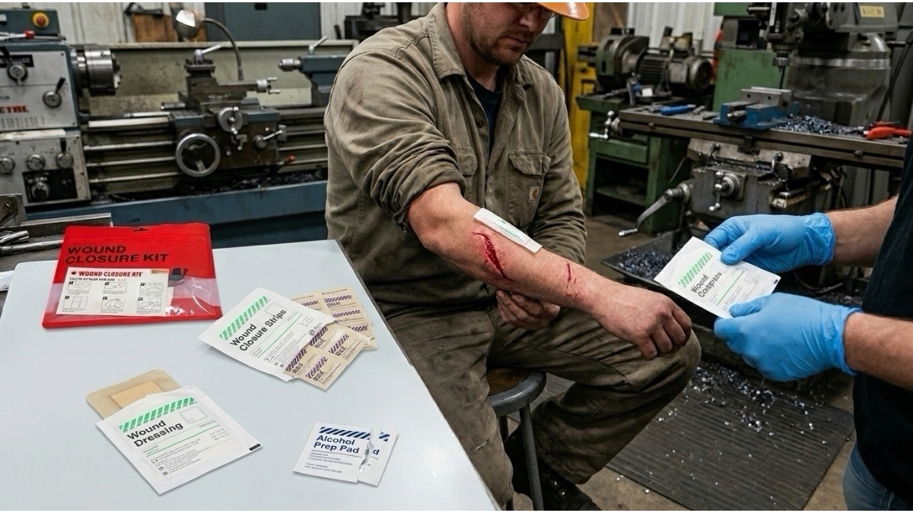

Beyond Basic Bandages: How Advanced Wound Closure Architecture Safeguards Assembly Line Efficiency and Mitigates OSHA Liability
JUN 09, 2026

In high-velocity, precision-driven operational environments - such as automated e-commerce fulfillment hubs, automotive assembly lines, and light industrial metal fabrication plants - the most pervasive threat to daily productivity is not a catastrophic fatality. It is the micro-trauma of linear lacerations, puncture wounds, and severe skin scrapes caused by sharp sheet metal, heavy packaging straps, bands, and utility blades. For a plant manager or corporate safety officer, how these specific injuries are treated on the floor dictates the thin boundary between uninterrupted continuous improvement and compounding operational friction.
Relying on standard, retail-grade generic first aid kits to handle these workplace incidents introduces immediate systemic vulnerability. Generic kits are built on a philosophy of "covering the wound," packed with loose, low-tensile plastic band-aids that slide off under industrial sweat and grease. When an operator suffers a deep dermal split, a regular bandage offers zero structural counter-tension. The flesh remains gaped open, exposing raw tissue to airborne industrial lubricants and shop floor dust. This structural failure forces the enterprise into a costly dilemma: either let the employee remain on the line with an improperly sealed, high-infection wound, or lose them for half a day to a clinic queue for standard emergency room sutures.
True risk mitigation within the industrial safety supply chain requires an isolated protocol designed to bypass clinical dependency. The GoSafeMed Wound Closure Kit provides this exact institutional solution by shifting the rescue paradigm from passive covering to active mechanical stabilization.
Replacing Hospital Sutures with Non-Invasive Skin Closure Hardware
When a deep, linear laceration occurs on a technician's hand or forearm, the primary operational priority is the immediate approximation of the wound margins. If the skin edges remain separated, the injury is classified as a severe open wound, instantly triggering mandatory medical interventions and inflating the facility's OSHA-recordable safety incident rates.
The independent GoSafeMed module resolves this friction point by embedding the GoSafeMed Wound Closure Strip (x1) as its core clinical component. This is not a decorative tape; it is an engineered, high-tensile, non-invasive dermal alignment device. Designed to integrate perfectly with preliminary BZK Antiseptic Pads (x10) for non-stinging decontamination, the closure strip features an advanced internal fiber backing network. When applied across the axis of a clean laceration, it exerts a continuous, uniform mechanical traction that actively pulls the separated tissue back together, splinting the skin matrix without a needle. By substituting standard surgical threads with high-adhesion skin closure strips, the enterprise effectively eliminates the necessity for off-site medical stitching. The operator is stabilized within three minutes, halting localized hemorrhage and allowing them to return safely to non-strenuous duties without breaking production momentum.
Engineering a Vacuum Shield Against Industrial Fluids and Sepsis
Following mechanical alignment, the secondary hazard in a manufacturing environment is the rapid migration of environmental contaminants into the vulnerable dermis. Standard woven dressings absorb external water, grime, and machinery oil, transforming the wound site into a localized incubator for bacterial infection and subsequent corporate insurance liability.
To lock down this risk vector, the kit incorporates the GoSafeMed Clear Adhesive Wound Dressing (x2) to seal our non-adherent Wound Compress (5cmx5cm & 10cmx10cm) layers. This transparent polyurethane dressing acts as a semi-permeable, waterproof secondary barrier that mimics human skin. It forms a complete liquid-proof seal that isolates the closed laceration from factory moisture and abrasive particles. Crucially for EHS coordinators and shop floor supervisors, the optically clear nature of the adhesive dressing enables direct visual auditing of the wound site's healing progression. Management can monitor for erythema or fluid accumulation without peeling away the dressing and breaking the sterile field, keeping the worker fully protected while maintaining complete dexterity and compliance.
The Procurement Blueprint for Industrial PPE Distributors
For procurement directors and global industrial PPE distributors, sourcing first aid inventory must be calculated through the lens of asset protection and liability reduction. Distributing generic, all-in-one medical bags is a high-waste, high-risk strategy that fails the stress of industrial trauma.
Integrating the specialized GoSafeMed Wound Closure Kit into your facility infrastructure means buying an operational protocol that actively lowers your total cost of care. By isolating daily laceration management into a dedicated sub-pack centered on high-tension Wound Closure Strips and transparent Clear Adhesive Dressings, you drastically compress employee medical absenteeism, shield your organization from OSHA downtime penalties, and secure a lean, hyper-organized safety matrix that withstands the harsh realities of the modern industrial floor.